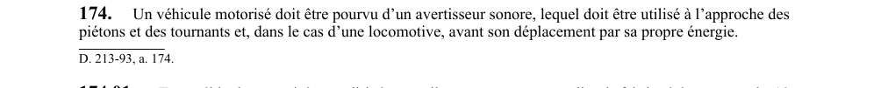

art-174-RSSM : avertisseur sonore véhicule diesel norme
Un article du wiki ⚖️ Recueil législatif
En bref
Tout véhicule motorisé doit être pourvu d'un avertisseur sonore utilisé à l'approche des piétons et tournants. Cette obligation vise l'employeur.
- Tout véhicule diesel non dirigé par rail.
- Tout véhicule diesel ou électrique doit être entretenu pour éviter toute accumulation d'huile.
- Véhicule diesel fabriqué à compter du 10 juillet 1997.
- Norme CAN/CSA-M424.2-M90.
🌐 LegisQuébec · 📄 PDF officiel
Texte officiel : capture du PDF
{kind=link}

Toucher l'image pour l'agrandir🔗 Voir art. 174 RSSM dans le PDF (page 56)
Version : texte officiel du RSSM (RLRQ c. S-2.1, r. 14), à jour au 1er mai 2024 — Éditeur officiel du Québec
Voir aussi
- art. 172 : dégagement méthane concentration inconnue · obligation : lorsqu'un dégagement de méthane est détecté et que sa concentration n'est pas connue, toute source d'ignition doit être éliminée, les appareillages électriques mis hors tension, et les lieux affectés évacués, sauf pour le travailleur chargé de mesurer la concentration.
- art. 173 : travaux présence méthane mesures sécurité · obligation : si un travail est effectué en présence de méthane, la concentration doit être mesurée au moins une fois toutes les 2 heures et maintenue à moins de 1 %, et l'appareillage électrique ainsi que les moteurs doivent être conçus pour fonctionner dans une atmosphère grisouteuse.
- art. 175 : avertisseur marche arrière véhicules lourds · obligation : les camions d'une capacité nominale de charge de 5 000 kg ou plus, les chargeurs sur roues de 2 250 kg ou plus (sauf chargeuses navettes sous terre), les niveleuses et bouteurs sur roues doivent être munis d'un avertisseur sonore automatique pour la marche arrière.
- art. 176 : phare feu position véhicule motorisé · obligation : sauf pour usage exclusif dans des zones ou bâtiments avec un niveau d'éclairement minimum de 50 lux, tout véhicule motorisé doit être muni d'au moins un phare à l'avant et d'un feu de position à l'arrière.
- ⚖️ Loi habilitante : LSST
- ↑ Index du bloc : Sautage et explosifs
Pages qui pointent ici (5)
- art-172-RSSM : dégagement méthane concentration inconnue Recueil législatif
- art-173-RSSM : travaux présence méthane mesures sécurité Recueil législatif
- art-175-RSSM : avertisseur marche arrière véhicules lourds Recueil législatif
- art-176-RSSM : phare feu position véhicule motorisé Recueil législatif
- RSSM : Sautage et explosifs (art. 161 à 200) Recueil législatif